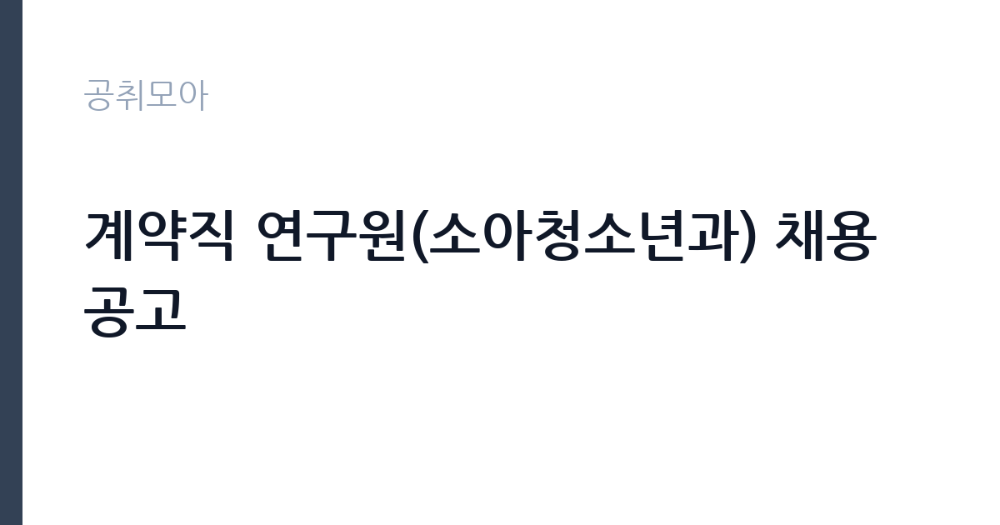

[공공기관] 계약직 연구원(소아청소년과) 채용 공고
국립중앙의료원 · 서울 · 마감 2026-11-18 (D-14) · 출처 잡알리오

한눈에 보는 모집 조건
| 기관 | 국립중앙의료원 |
|---|---|
| 공고명 | 계약직 연구원(소아청소년과) 채용 공고 |
| 고용형태 | 기간제 |
| 근무지 | 서울 |
| 게시일 | 2026-11-04 |
| 마감일 | 2026-11-18 (D-14) |
지원자격, 이렇게 읽으세요
- [필수] 생명과학, 식품영양학, 보건학 박사학위 소지자로 아래 조건을 충족하는 자
- [학위 인정 범위] 아래 조건 중 하나를 충족하는 경우
- 졸업증명서 또는 학위수여증명서 상 학위가 ‘생명과학’ 또는 ‘식품영양학’ 또는 ‘보건학’인 경우
기간제 근로자는 근로계약 기간이 정해진 신분입니다. 계약 기간과 갱신 가능 여부가 근로계약서에 명시되며 기간 만료 시 근로관계가 종료됩니다. 결원 보충이나 특정 사업 기간에 맞춰 채용되는 경우가 많아 업무 범위가 명확합니다. 이번 공고는 국립중앙의료원이 직접 진행하는 자체 전형입니다. 연구직은 전공과 학위가 가장 중요한 기준입니다. 석사 이상을 요구하는 공고가 많고, 특정 전공을 명시하는 경우에는 유사 전공 인정 범위를 확인해야 합니다. 관련 분야 연구 경력과 논문 실적을 우대하며 실적은 증빙 자료로 제출해야 합니다. 연구 과제 참여 이력과 데이터 분석 도구 활용 능력도 평가 대상입니다. 채용 조건과 처우는 공고문에 명시되어 있으므로 원문을 확인하십시오. 우대 사항은 증빙이 없으면 반영되지 않으므로 해당 여부를 먼저 확인해야 합니다. 자격증은 유효 기간과 등록 상태를 확인해야 합니다. 갱신이 필요한 자격이라면 갱신 여부를 먼저 점검하십시오. 응시 자격 판단이 애매하다면 접수 전에 채용 담당 부서로 문의하는 편이 안전합니다. 서류 제출 후에는 소명 기회가 없습니다. 이 공고 원문에 적힌 응시 조건 문구는 '[필수] 생명과학, 식품영양학, 보건학 박사학위 소지자로 아래 조건을 충족하는 자' / '[학위 인정 범위] 아래 조건 중 하나를 충족하는 경우' / '졸업증명서 또는 학위수여증명서 상 학위가 ‘생명과학’ 또는 ‘식품영양학’ 또는 ‘보건학’인 경우'입니다. 문구를 그대로 읽고 본인 해당 여부를 하나씩 표시해 두면 서류 단계에서 탈락하는 일을 줄일 수 있습니다.
이 공고의 포인트
이 공고의 첫 번째 포인트는 고용 형태입니다. 계약 기간이 정해져 있어 근무 종료 시점이 명확합니다. 그만큼 짧은 기간에 어떤 실적을 남길지가 중요해집니다. 두 번째는 업무 범위가 명확하다는 점입니다. 연구직 직무로 채용되므로 배치 이후 담당 업무가 크게 흔들리지 않습니다. 세 번째는 근무지입니다. 서울 지역 근무로 접근성은 좋지만 그만큼 지원자가 몰리는 지역이므로 경쟁률을 넉넉히 잡아야 합니다. 직무 특성이 분명해 본인의 경험과 맞는지 빠르게 판단할 수 있습니다. 같은 직무 공고 중에서는 접수 마감이 가장 빨라 일정을 앞당겨 잡아야 합니다. 선발 인원은 공고문에 명시되어 있으니 모집분야 항목을 함께 확인하십시오.
전형은 어떻게 진행되나
서류전형과 면접전형 외에 직무수행능력 평가가 붙는 경우가 있습니다. 평가 방식은 공고문에 구체적으로 적혀 있으므로 어떤 항목에 배점이 높은지 먼저 파악하십시오. 면접에서는 지원 동기보다 실제 업무 경험에 대한 질문이 많고, 답변의 구체성이 평가를 가릅니다. 전형 일정은 서류 마감 이후 빠르게 진행되므로 연락 가능한 번호를 정확히 기재하고 문자와 메일을 수시로 확인해야 합니다. 최종 단계에서는 결격사유 조회와 신체검사가 진행됩니다. 면접조 편성과 대기 시간이 공지되므로 당일 도착 시간을 여유 있게 잡으십시오.
원문에서 확인한 전형 방식
[필수] 생명과학, 식품영양학, 보건학 박사학위 소지자로 아래 조건을 충족하는 자 [학위 인정 범위] 아래 조건 중 하나를 충족하는 경우 1. 졸업증명서 또는 학위수여증명서 상 학위가 ‘생명과학’ 또는 ‘식품영양학’ 또는 ‘보건학’인 경우 2. 졸업증명서 또는 학위수여증명서 상 전공(학과)명에 ‘생명과학’ 또는 ‘식품영양’ 또는 ‘보건’이 포함된 경우 (A) 박사학위 취득 후 공공기관* 또는 대학 산학협력단 6년 이상 경력 보유자** * 재정경제부 공공기관 지정 기준 ** 근무 경력은 ‘4대보험자격득실확인서 중 1종’ 및 ‘경력(재직)증명서’ 모두 제출 가능한 경우에 인정 (B) 직무 관련 연구 실적이 있는 자* * 판단기준: 공고마감일로부터 박사학위 취득 이후 최근 3년간 SCI(E)/ SSCI/ KCI 논문 실적(제1저자 또는 교신저자)** 1편 이상 보유자 ** 증빙자료 논문 제출 [우대] ·소아과학 분야 데이터 분석(임상 및 다중오믹스 포함) 유경험자 ·최근 3년간 소아과학 및 오믹스(다중오믹스 통합분석) 분야에서 SCI(SCIE) 학술지(JCR 상위 10% 또는 IF 10.0 이상) 주저자(교신저자 또는
이런 분께 추천해요
- 관련 전공 석사 이상 학위를 가진 분
- 연구 과제 수행과 보고서 작성 경험이 있는 분
- 데이터 분석 도구를 실제로 활용할 수 있는 분
지원 전 체크리스트
- 응시자격 요건과 경력 기준을 충족하는가 — 경력은 증명서로 입증해야 합니다
- 계약 기간과 근무 시작일·종료일을 확인했는가
- 제출서류 목록을 모두 준비했는가 — 누락 시 서류 단계에서 탈락합니다
- 접수 마감 2026-11-18 이전에 접수 방식을 확인해 제출했는가
모집 일정과 제출 타이밍
공고 게시일은 2026-11-04, 접수 마감은 2026-11-18입니다. 준비 기간은 약 14일로 서류 준비와 자격 증빙을 함께 처리하기에는 넉넉하지 않은 편입니다. 첫 이틀 안에 공고문과 첨부 서식을 내려받아 요건을 확인하고 남은 기간에 증빙 서류를 발급받는 일정이 현실적입니다. 면접은 서류 합격자 발표 후 짧은 간격으로 진행되는 경우가 많으므로 서류 제출과 동시에 면접 준비를 시작하는 편이 안전합니다. 마감일에는 접수 시스템이 몰리므로 하루 전까지 제출을 마치는 것이 좋습니다. 마감 이후에는 어떤 사유로도 접수가 인정되지 않으므로 하루 전 제출을 목표로 하십시오.
직무 이해하기: 공공기관
한국청소년상담복지개발원은 청소년 상담과 복지 정책을 지원하는 기타공공기관입니다. 청소년 상담 전화와 사이버 상담, 상담 인력 교육 프로그램을 운영하며, 청년인턴은 부서에 배치되어 사업 운영을 보조합니다. 상담 관련 개인정보를 다루므로 보안 규칙이 엄격합니다. 연구직은 정책이나 기술 과제를 설계하고 데이터를 수집·분석해 결과물을 만드는 일을 합니다. 문헌 검토와 조사 설계, 통계 분석, 보고서 작성이 기본 주기이고 과제에 따라 현장 조사나 실험이 붙습니다. 연구 결과를 논문이나 정책 제안으로 정리하고 대외 발표와 학술 교류도 업무에 포함됩니다. 계약 기간이 정해진 과제 기반 채용이 많아 수행 과제와 성과 목표를 입사 초에 확정하는 경우가 일반적입니다. 실무는 선임자와 짝을 이뤄 익히는 방식이 일반적이라 첫 달은 교육과 현장 적응에 쓰입니다. 현장 업무와 사무 업무의 비중은 기관의 사업 일정에 따라 계절별로 달라집니다. 이 건의 근무 대상 지역·부서는 원문 기준 '소아청소년과'입니다 원문에 '근무 경력은 ‘4대보험자격득실확인서 중 1종’ 및 ‘경력(재직)증명서’ 모두 제출 가능한 경우에 인정'라는 조건이 명시되어 있습니다.
자기소개서 작성 팁
연구직 지원서는 연구 역량을 구조적으로 보여줘야 합니다. 수행 과제, 사용한 방법론, 도출한 결과와 기여도를 한 문단씩 정리하십시오. 지원 기관의 사업과 본인 연구를 연결하는 부분이 특히 중요합니다. 채용 후 하고 싶은 연구 주제를 구체적으로 제시하면 준비도가 드러납니다. 구성은 지원 동기, 직무 경험, 기여 방안 순서가 무난합니다. 지원 동기는 국립중앙의료원의 사업 중 본인이 관심을 가진 부분을 한 가지로 좁혀 서술하고 추상적인 표현은 줄이십시오. 직무 경험은 담당했던 업무와 규모, 결과를 수치로 제시하면 설득력이 올라갑니다. 기여 방안은 입사 후 첫 3개월과 1년 계획으로 나눠 쓰면 준비도가 드러납니다.
면접 준비 포인트
면접은 연구 경험과 방법론에 대한 질문이 중심입니다. 본인이 수행한 연구에서 가설을 어떻게 세웠고 어떤 방법으로 검증했는지 구체적으로 답해야 합니다. 연구 결과가 실제 정책이나 사업에 어떻게 쓰일 수 있는지 묻는 질문도 자주 나옵니다. 사용 가능한 분석 도구와 데이터 처리 경험을 명확히 밝히십시오. 마지막 질문 시간에는 근무 조건에 대한 확인 사항을 한 가지 정도 준비해 가면 성실성이 드러납니다. 모르는 질문에 추측으로 답하면 감점 요인이 되므로, 확인 후 답하겠다고 밝히는 편이 안전합니다.
급여·근무조건 읽는 법
알리오(공공기관 경영정보 공개시스템) 2025년 결산 경영공시 기준으로 국립중앙의료원 일반정규직 1인당 평균보수액은 7,865만원, 공시된 신입사원 초임은 3,751만원입니다. 평균보수액은 기본급에 고정수당·실적수당·성과상여금·급여성 복리후생비를 모두 합산한 값이라 월 기본급만 보고 판단하면 실제와 크게 어긋납니다. 이번 공고는 기간제 채용이라 위 정규직 평균보수는 그대로 적용되지 않습니다. 기간제 보수는 기관의 기간제 임금 기준을 따르며 계약 기간이 함께 정해집니다. 연구직의 보수는 채용 신분에 따라 크게 달라집니다. 공공기관 연구직은 기관의 연봉제 또는 직급별 임금표를 적용받고, 계약직 연구원은 계약 기간과 연봉 총액이 개별로 정해집니다. 과제 기반 채용은 인건비 예산 범위에서 연봉이 결정되므로 동일 직급이라도 과제에 따라 차이가 납니다. 구체적인 금액과 성과급 조건은 공고문에서 확인하십시오. 2026년 적용 최저임금은 시급 10,320원, 월 환산 2,156,880원(주 40시간·209시간 기준)입니다. 고용노동부 고시 제2025-47호로 확정된 금액입니다. 공고문에 금액이 제시되지 않은 항목은 원문 보수표나 처우 설명에서 확인해야 하며 확인되지 않은 수치는 쓰지 않는 것이 원칙입니다. 비교할 때는 월 급여뿐 아니라 상여·명절휴가비·복지포인트·초과근무수당까지 포함한 연간 총액으로 계산하십시오. 기간제라면 계약 기간 동안의 총액을, 무기계약이라면 호봉 상승과 정년까지의 누적 소득을 기준으로 판단하는 편이 정확합니다.
자주 묻는 질문
- 선발 인원은 몇 명인가요?
공고문의 모집분야 항목에 직종별 인원이 표로 제시되어 있습니다. 첨부된 공고문 원문에서 확인하십시오. - 근무지는 어디인가요?
서울 지역의 국립중앙의료원 소속 근무지입니다. 세부 주소와 출퇴근 조건은 원문 공고문에서 확인할 수 있습니다. - 보수는 얼마인가요?
채용 신분(기간제)과 기관 임금 규정에 따라 정해지며 구체적인 금액은 공고문 처우 항목에 제시됩니다. 금액이 공개되지 않은 경우에는 원문의 보수표를 확인하십시오.
함께 보면 좋은 공고
[공공기관] 한국농어촌공사 영산강사업단 공무직(청소원) 보훈 장애 제한경쟁 채용공고 — 마감 2026-11-20[공공기관] 2027년 1차 박사후연수연구원, 석사후연수연구원 및 위촉연구원 공개채용 — 마감 2026-11-20[공공기관] 서울대학교치과병원 2027년 상반기 정규직(원무직) 채용 공고 — 마감 2026-11-18출처: 잡알리오 공개정보를 바탕으로 공취모아가 정리한 안내글입니다. 모집 조건·일정은 변경될 수 있으니 지원 전 반드시 원문 공고문을 확인하세요. 본 글은 정보 제공용이며 합격을 보장하지 않습니다.